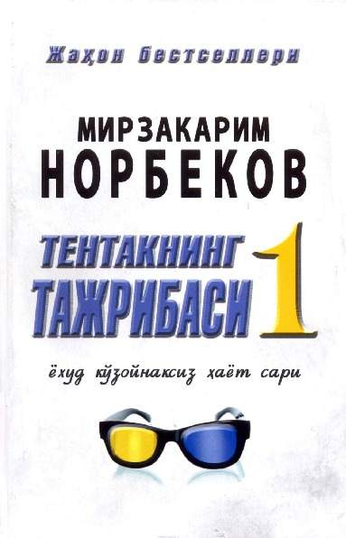

Kutubxona
1. Abdurauf Fitrat – Oila
Oila masalasi, uning jamiyat hayotidagi o'rni qadim-qadimdan faylasuflar, adiblar va boshqa olimlarni qiziqtirib kelgan.
XX asr Turkiston jadidchilik harakatining ulkan namoyandalaridan biri Abdurauf Fitrat ham ushbu masalaga alohida e'tibor bergan. U mazkur asarida oila qurish zaruratidan tortib, oila a'zolaring o'zaro munosabatlari, ota-ona, farzandlarning huquq va burchlari, hatto, go'daklarni tarbiyalash va unda yosh onalarning o'zini qanday tutishi kerakligi haqidagi masalalarni chuqur yoritib bergan. Ijtimoiy omil sifatida oilaning jamiyatdagi o'rni, bolalarning ijtimoiy, axloqiy va mehnat tarbiyasiga alohida e'tibor berilgan. Shu bilan birga sog'lom, ma'rifatli oila va u voyaga yetkazadigan har tomonlama yetuk avlodning shu millat va mamlakat iqtisodiy-siyosiy rivojining, shu yurt shonu-shuhrati, qudratining poydevori, abadul-abad mavjudligining muhim shartlaridan ekanligi takidlangan.
Kitob milliy tarbiya o'ziga xos ahamiyat kasb etib borayotgan hozirgi kunda juda muhimdir.
Mas'ul muharrir: D. A. Alimov, tarix fanlari doktori.
Tarjimon va izohlar muallifi: Sh. Vohidov, tarix fanlari doktori, professor.
2. Abdulla Qodiriy – O'tgan kunlar

Modomiki, biz yangi davrga oyok qo'ydik, bass, biz har bir yo'sunda ham shu yangi davrning yangiliklari ketidan ergashamiz va shunga uhshash dostonchiliq, rumonchiliq va hikoyachiliqlarda ham yangarishga, xalqimizni shu zamonning "Tohir-Zuhra" lari, "Chor"
darvesh” lari, “Farhod-Shirin” va “Bahromgur” lari bilan tanishdirishga uzimizda majburiyat his etamiz.
Yozmoqqa niyatlanganim ushbu - “O'tkan kunlar”, yangi zamon rumonchiligi bilan tanishish
yulida kichkina bir tazhriba, yana tugrisi, bir havasdir. Ma'lumki, har bir ishning ham yangi
— ibtidoylarining talay kamchilik-lar bilan maydonga chiqishi, ahli
Ila sekin-sekin tuzalib, takomolga yuz tutishi tabiy bir holdir. mana shu daldacida Havasimda jasorat qildim, havaskorlik orqasida kechaturgan qusur va hatolardan chuchib
turmadim.
Moziyga kaytib ish kurish hayirlik, deidilar. Shunga kwra mavzuni moziydan, yaqin utgan
kunlardan, tari-khimizning eng kirlik, kora kunlari bulgan keyingi "khon zamonlari" dan
belguladim.
3. Elchin Safarli – Dengiz haqida so'zlab ber menga
— Hayotning bebaholigini, nurning tuganmas va abadiyligi, o'tayotgan har lahzaning qadrli ekani - inson tafakkurini hamisha idrok etishga chorlab keladi. Bu dunyoda baxtning ham, baxtsizlikning ham shifosi bor. Kim umrini qanday va qanaqa yo'sinda yashab o'tishi - faqat o'ziga bog'liq.
— Ushbu asar bizni hayotga teranroq qarashga, yorug'likka intilish bilan orzularimizni ro'yobga chiqarish hamda vaqtni isrof qilmaslikka da'vat etadi. Buning uchun sevishga shoshilmog'imiz, nafas olishimizda esa muhabbat bo'lmog'i lozim.
— Bu qissa hayotdagi eng muhim narsalar o'z uyingdaligini anglashing uchun dunyoning yarmini kezib chiqishingga to'g'ri kelishi haqida hikoya qiladi.
4. Imom Zarnujiy – Ilm olish sirlari
Inson zotini ilm bilan barchadan ortiq qilgan Alloh taologa hamdu sanolar bo’lsin!
Bashariyatning komilrog’i, payg’ambarimiz Muhammad alayhis sapom va ahli ayollariga, ashobi
kiromlariga hamda ularga ergashgan insonlarga Allohning salomlari, rahmatu barakotlari yor bo’lsin!
Ammo ba’d:
Janob payg’ambarimiz va ashobi kiromlar ilmu hikmat va odob axloqi hamidalarning sarchashmasi,
tuganmas buloqlaridirlar.
Zamonamizning ko’plab yoshlarida ilm o’rganish borasida jiddi-jaxdlari, yaxshigina harakatlari
bo’lsada, ilm hosil qila olmayotganlarini shohidi bo’lib, ko’p mulohazaga bordik. Ushbu ulug’
maqsadlarni hosil bo’lishida ularga odob-axloq ko’rsatmalari zarurligini bildik. Mo’’tabar ustozlarimiz
odobu axloq buloqlari hisoblanadilar. Ushbu kitobni o’quvchilarga ilm sa-rhadlaridan bahramand
bo’lishni tilab, mehribon ustozlarimiz va kaminani duoyu xayr bilan yod etib, qiyomat kuni
Maxshargohda najot topuvchilar qatorida bo’lishimizni zikr etishlarini umid etamiz. Kamina ko’p
istixoralar qilgan holda, yolg’iz Allohning, qolaversa, aziz ustozlar irshodu barokatlaridan, fayzu
futuhotlaridan imkon qadar nasiba olib, ushbu kitob tasnifiga baqadri hol kirishdik. Kitobni «Тa’limul
mutaallimu tariqat taallumi», ya’ni «Shogirdning ilm egallash yo’l-yo’riqlarini o’rganishi» deb
nomladim.
5. JonGreen – Yulduzlar aybdor
Bu romanni eslatuvchi sifatida shunchalik jozibali emas
fantastika samarasidir. Men u bilan birga keldim.
Sinashdan na kitoblar, na kitobxonlar foyda ko'rmaydi
faktlar ishning asosini tashkil etadimi yoki yo'qligini aniqlang. O'xshash
urinishlar uydirma syujetlarning ahamiyati g'oyasini buzadi, ular
bizning biologik fundamental dogmalarimizga bog'liq bo'lishi mumkin
turi.
Hamkorligingizga umid qilaman.
Bu ma'lumot o'chirirlgan!
7. Said Chamlija – Iymon va huzun
Inson hayoti davomida ko'plab sinov-imtihonlariga duch keladi. Ularni sabr va sabot bilan yengib o'tish iymonning taqozosidir. Unutmaylik, iymonimizda tushkun bo'lsak, hayotimiz ham tushkun kechadi.
Ushbu kitobda asrimizning eng jiddiy muammolari bo'lmish tushkunlik, umidsizlik, asabiylik, beqarorlik xususida jiddiy muloxazalar bayon qilingan. Tushkun insonlar iymonsiz emas, albatta. Lekin tutganimiz iymon shoxi bizni hayot tashvishlaridan chiqarolmasa, u shoxni qanday tutganimizni o'ylab ko'rishimiz kerak.
Muallif bu borada jiddiy savollardan o'rtaga tashlaydi va jo'yali javoblarni ham hikmatli tarzda taqdim etadi.
O'qing, o'qing, muloxaza qiling va hayotga yorug' nazar tashlang.
Yo'ldan ozorini olib tashlash iymondan hisoblansa, fikr va qalbdagi ozorlarni ketkazish qanchalik ekan?!
8. Mirzakarim Norbekov – Tentakning hayot tajribasi

O'z baxtining himoyachisi ham, uni yakson qiluvchisi ham insonning o'zi. Agar sizga farzandlarning o'tish yoshidagi qiyinchiliklarni qanday yengib o'tish, farzandlardan chaqir tikanak o'sib yetishmasligi uchun ularning bog'chasini nimalar bilan o'g'itlash lozimligiga qiziqsangiz, farovonlikning izchil va doimiy gurkirab rivojlanishining iloxiy qonuniyatini bilishni istasangiz, Mirzakarim Norbekovning "Tentakning tajribasi 3" kitobidan bahramand bo'ling.
Siz axir ko'plab hayotiy savollaringizga javob topishni istaysiz-ku?
U holda olg'a, ushbu kitobni mutolaa qiling, mushoxada yuriting va harakatga kirishing!
Ushbu kitobni quvonchu g'amlarini, g'alaba nashidalariyu, mag'lubiyat iztiroblarini men bilan baham ko'rgan, hayotlarining eng ajoyibdamlarini menga bo'lishgan do'stlarimga bag'ishlayman.
9. Mirach Chag'ri Oqtosh – Hayot yutqazgan joyingdan boshlanar
— Yutqazdim deb o'ylaganingda shu so'zlar senga taskin bo'lsin: "Qalbi go'zal odam yutqazsa ham g'olib bo'ladi".
— Do'stim, aslo ortingga o'girilma.
Oxiri nima bo'ladi, deb ichingni kemirmasdan, o'zingni tinimsiz aybdor his qilmasdan, hech to'xtamay oldinga yur. Sen o'ylasang ham, o'ylamasang ham, yashagan hayoting shu yerda tugaydi. Va shu nuqtadan yana yangisi boshlanadi.
— Ortda qolgan umringning bir soniyasini o'zgartira olasanmi?!
Yo'q. Biroq endi yashaydiganlaringni go'zallashtirishing mumkin.
— Darveshdan so'radilar:
"Hamma narsamizni yo'qotdik, endi nima qilamiz?"
— Darvesh javob berdi:
"Choy qo'y, yangidan boshlaymiz..."
10. Tohir Malik – Alvido... bolalik
— Hozir qo'limga miltiq berib qo'yishsayu, darvozadan otam bilan onam kirirb kelishsa, shartta otardim. Ana undan keyin o'zimni ham otib yuborishsa mayli. Yo'q avval sud bo'lishi kerak. Sudda gapirishim shart.
"Bolasini tashlab ketgan ota-onaning jazosi shu", deyman. "Tirik yetimlar, hammamiz ablah ota-onalaringizni topib, otib yuboring. Yolg'on gaplar to'qib, ularni yaxshi odam qilib ko'rsatmang bir-birlaringizga.
Ayamay, otib tashlang!" deyman.
"Tirik yetimlar miltiq beringlar!" deyman! Ana shundan keyin meni otishsa ham mayli...